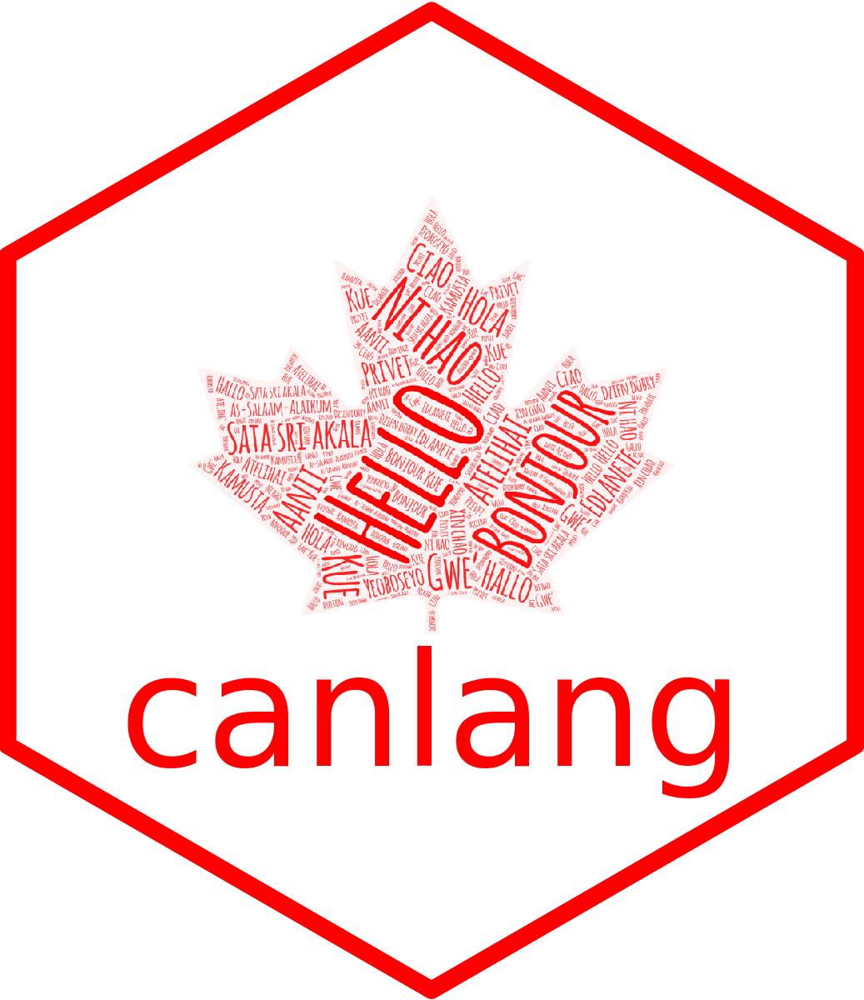

canlang 
The goal of {canlang} is to easily share language data collected in the 2016 Canadian census. This data was retreived from the 2016 Canadian census data set using the {cancensus} R package.
Installation
You can install the development version from GitHub with:
# install.packages("devtools") devtools::install_github("ttimbers/canlang")
Example usage
The data set can_lang lists the counts of how many Canadians report each language as their mother tongue, which language they speak most often at home, which language they use most often at work, and which language they have knowledge for. This data was recorded in the 2016 Census:
library(canlang) head(can_lang) #> category language mother_tongue #> 1 Non-Official & Non-Aboriginal languages Afrikaans 10260 #> 2 Non-Official & Non-Aboriginal languages Akan (Twi) 13460 #> 3 Non-Official & Non-Aboriginal languages Albanian 26895 #> 4 Aboriginal languages Algonquin 1260 #> 5 Non-Official & Non-Aboriginal languages American Sign Language 2685 #> 6 Non-Official & Non-Aboriginal languages Amharic 22465 #> most_at_home most_at_work lang_known #> 1 4785 85 23415 #> 2 5985 25 22150 #> 3 13135 345 31930 #> 4 370 40 2480 #> 5 3020 1145 21930 #> 6 12785 200 33670
library(ggplot2) ggplot2::ggplot(data = can_lang, aes(x = most_at_home, y = mother_tongue, colour = category, shape = category)) + geom_point(alpha = 0.7) + scale_color_manual(values = c("blue3","red3","black")) + scale_y_log10(name = "Number of Canadians reporting the \n language as their mother tongue", labels = scales::comma) + scale_x_log10(name = "Number of Canadians speaking the language \n as their primary language at home", labels = scales::comma) + annotation_logticks() + theme_bw()